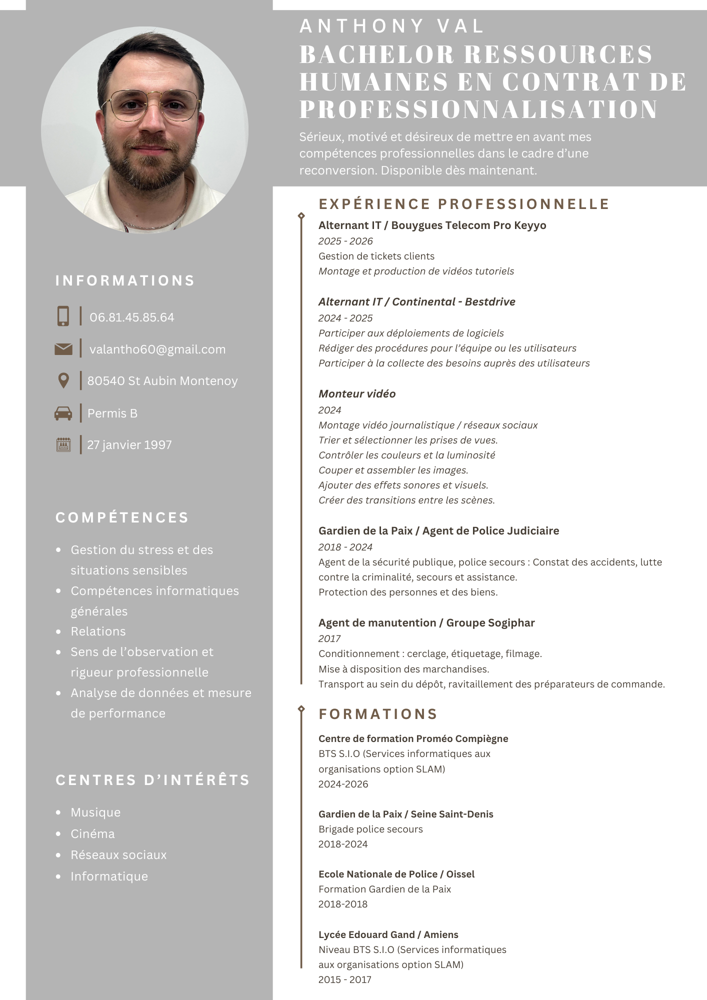

Développeur & passionné d'informatique | BTS SIO SLAM
Je m'appelle Anthony, j'ai 29 ans et je suis actuellement en BTS S.I.O (Services Informatiques aux
Organisations) option S.L.A.M (Solutions Logicielles et Applications Métiers) au sein du centre de formation
Proméo situé à Compiègne (60).
J'ai effectué cette formation en Alternance au sein de l'entreprise
Bestdrive,
située à LE MEUX (60) pendant la première année. Pour la seconde année, je suis actuellement chez Keyyo -
Bouygues Telecom Pro à Abbeville (80).
Ancien agent de la Police Nationale, j'ai décidé de mettre en oeuvre ma reconversion dans le domaine de l'informatique, qui a débuté en septembre 2024. Ne reconnaissant plus le métier qui me passionnait, j'ai souhaité effectuer cette reconversion dans le but d'obtenir mon BTS S.I.O et ainsi, de changer de vie.
Mon parcours est présenté en détail un plus bas, mais vous avez également la possibilité de le visualiser ici, ou de le télécharger
Formation Gardien de la Paix
Agent de Police Judiciaire, mission de police secours
Reconversion : Reprise d'études et souhait d'obtenir le BTS non obtenu par le passé
 HTML
HTML
 CSS
CSS
 PHP
PHP
 JavaScript
JavaScript
 Java
Java
 Adobe
Adobe